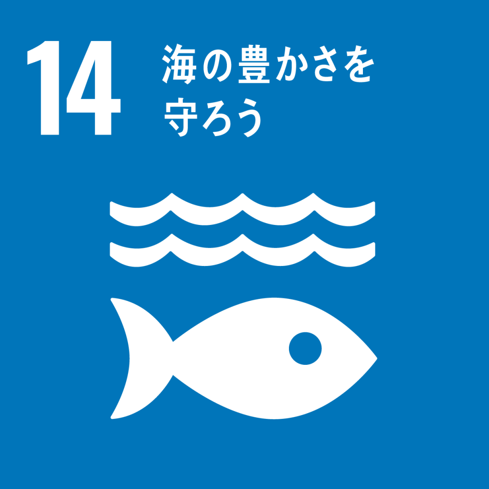
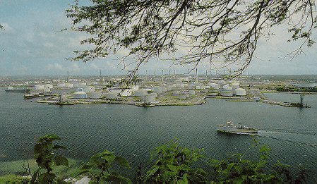

オランダ王国の構成国でベネズエラの北約66㎞のカリブ海に位置する島です。名称の由来は先住民たちが自分たちを指す言葉だったという説があります。
キュラソーは世界文化遺産に登録されるほど美しい街並みや魅力的なビーチを持っています。

キュラソーでは、夏は短く、暑く、本曇り、冬は短く、暖かく、一部曇り、年間を通じて蒸し暑く、乾燥状態、かなりの強風です。熱帯海洋性気候で、 1 年を通して、気温は 25°Cから 32°Cに変化しますが、24°C 未満または 34°C を超えることは滅多にありません。
キュラソーでは観光地が有名であり観光産業も発達しています。フラミンゴなど美しい野生生物が多く生息していますが、バレン湾に油槽所（キュラソー・オイル・ターミナル）を建設したために漏れた油が海上に流出し、環境汚染が起こりました。これによりピンク色のフラミンゴなどの野生動物は油まみれになりました。

ヤンコックの地区では鳥やカニ、植物は油まみれで真っ黒になりました。

キュラソー島の港町であるウィレムスタットはオランダの植民都市であり、3世紀以上も異文化交流を行いながら発展をし続けました。 ウィレムスタットの建築物は、ヨーロッパの伝統をベースに、南米やアフリカの文化の影響を受け入れつつ、カリブ海独自の景観を発展させたということです。
キュラソーの特徴として、先ほども述べましたが、ウィレムスタットのキュラソー島が浮かんでいる南米カリブ海がやはり魅力です。白い砂浜に透き通った海が美しく、「世界遺産検定」があるほどの人気のユネスコ世界遺産で、旅先に選ばれる方も多いです。浮かんでいるキュラソー島のパステルカラーの街並みが海の美しさをより引き立てています。
[3.]で述べたオイル・ターミナルについては、建設を廃止し、油が漏れる原因の究明をおこなったり、予防対策を強化するなど海洋環境の保護に貢献しています。
 